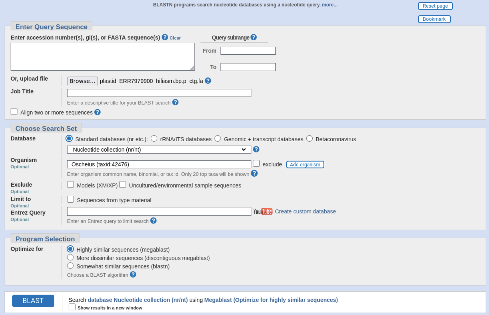
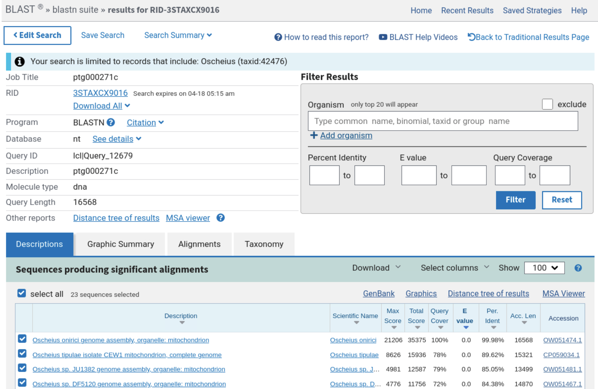

Chapter 7 Genome assembly assessment

After carrying out a genome assembly, you should always do some basic checks on it to make sure it has the expected size, and that it matches the species that you sampled.
In this section we will use a few different tools to check the quality of the assembly:
- seqkit - which you used to check the raw read files as well
- tiara - a very fast bacterial and prokaryote DNA classifier
- busco - for finding universal single copy orthologues for that clade
We will also learn about purge_dups, a tool for removing duplicate contigs so that you are left with only a haploid genome assembly.
In the previous section you saw how to run the hifiasm assembler on a smaller downsampled subset of reads. In this section we will be using the full genome assembly (which took about 3 hours to complete).
7.1 Obtaining the full assembly
We need to create a directory to put the assembly in and then change directory to it.
mkdir -p ~/eukaryote_assembly/3-assessment
cd ~/eukaryote_assembly/3-assessmentCreate a symbolic link (i.e. shortcut) to the fasta file with the full assembly
ln -s /pub14/tea/nsc202/ERR7979900_hifiasm.bp.p_ctg.fa7.2 Basic assembly statistics
Run seqkit stats to find some basic statistics about the genome assembly:
seqkit stats -a ERR7979900_hifiasm.bp.p_ctg.fa-aspecifies all stats, including n50
You should see an output like this:
file format type num_seqs sum_len min_len avg_len max_len Q1 Q2 Q3 sum_gap N50 Q20(%) Q30(%) GC(%)
ERR7979900_hifiasm.bp.p_ctg.fa FASTA DNA 548 122,586,855 6,222 223,698.7 13,381,880 21,636.5 27,578 40,509.5 0 5,147,866 0 0 51.9
Statistics such as num_seqs, sum_len, min_len, avg_len, max_len etc are self explanatory, but you can get a full reference here. The Q20, Q30 values are only for FastQ files which have quality scores as well. Hifiasm creates a contig assembly, i.e. it creates contiguous sequences with no gaps, therefore sum_gap = 0.
You may not be aware of the N50 metric, which is calculated using the following method:
- Order the contigs from largest to smallest.
- Find the point that is 50% the length of the assembly starting from the start of the largest contig going toward the smallest contig.
- Determine which contig this point belongs to.
- The N50 is equal to the length of that contig.
In this assembly, 122 Mb of total sequence is assembled in only 548 sequences. The contig N50 is > 5Mb which is good as anything above 1Mb is generally considered to be high quality.
Some things you will want to look out for in future projects:
- High number of contigs, with small N50: This may indicate the genome assembly is very uncontiguous and so the assembler had issues with assembly.
- It is possible the genome is a particularly difficult one to resolve.
- The input data could be poor. Examples include:
- Low quality.
- Low coverage.
- Average coverage could be good but it is possible that there are areas of the genome that have low coverage, so these areas might not be assembled well.
- Length is not correct: Could be caused by several reasons:
- Parts of the genome are duplicated in the assembly causing the assembly to be too long. This can happen when a consensus could not be reached effectively for part of the genome.
- A short assembly can indicate that parts of the genome are missing.
- A drastically increased length can indicate the presence of contamination from another organism. The GC(%) can give a clue if this may be the case if it is different from what you might expect for your study species.
Further assessment can elucidate if there are any issues and what they may be.
7.3 Check for contamination
When assembling the genome of a eukaryote, it is very common to accidentally also sequence bacteria or other microorganisms that live alongside, on the surface of, or inside the target organism. There might also be endosymbionts (bacteria that live inside the cell of the eukaryote, eg Wolbachia), symbionts (eg Cyanobacteria when sequencing lichen), parasites (eg apicomplexan parasites inside some insects), or even the host organism if the target organism is a parasite (eg a host plant if you are sequencing a parasitoid gall wasp). In general, a non-target organism in your sample can be called a co-biont, i.e. an organism present alongside your organism of interest in a given sample.
A full discussion of methods for separating these cobionts is beyond the scope of this course. However, when doing a eukaryote genome assembly, it is always a good idea to do a quick check for bacteria and other prokaryotes using Tiara. Tiara is a very fast deep-learning based tool for identifying archaea, bacteria, prokarya, eukarya, and organelle (mitochondria and plastids) sequences.
First we need to open a new terminal window (right click -> click terminal), load the tiara environment and then navigate to your 3-assessment directory.
. usetiara
cd ~/eukaryote_assembly/3-assessmentIn this example, we have used a bash environment variable called ASSEMBLY, so that if you want to run it again, you just have to change the value of this variable in the first line.
ASSEMBLY=ERR7979900_hifiasm.bp.p_ctg.fa
tiara -i $ASSEMBLY -o $ASSEMBLY.tiara -t 16 --pr --tf all-iis the input sequence fasta file-ois the name of the main output file-tis the number of CPU threads to use--proutputs probabilities for each class (bacteria, eukarya, etc) for each sequence--tf allsplits the input fasta files into separate fasta files for each high probability assignment.
Take a look inside the main output file ERR7979900_hifiasm.bp.p_ctg.fa.tiara. The first few lines should look like this:
sequence_id class_fst_stage class_snd_stage org bac arc euk unk1 pla unk2 mit
ptg000001l eukarya n/a 0.001638 0.001968 0.000518 0.995876 0.000000 n/a n/a n/a
ptg000002l eukarya n/a 0.000000 0.000059 0.000574 0.999367 0.000000 n/a n/a n/a
ptg000003l eukarya n/a 0.000011 0.001375 0.001749 0.996865 0.000000 n/a n/a n/a
ptg000004l eukarya n/a 0.000000 0.001148 0.000726 0.998127 0.000000 n/a n/a n/a
ptg000005c bacteria n/a 0.000000 0.999976 0.000024 0.000000 0.000000 n/a n/a n/a
ptg000006l bacteria n/a 0.000000 0.999999 0.000001 0.000000 0.000000 n/a n/a n/a
ptg000007l eukarya n/a 0.000019 0.001668 0.004887 0.993426 0.000000 n/a n/a n/a
ptg000008l eukarya n/a 0.000001 0.000232 0.000022 0.999745 0.000000 n/a n/a n/a
ptg000009c bacteria n/a 0.000000 0.999979 0.000001 0.000020 0.000000 n/a n/a n/a
Columns 2 and 3 show you that Tiara runs in two stages:
- the first stage identifies organelles, bacteria, archaea, eukarya, and unknown (unk1)
- the second stage further identifies organelle sequences as plastid, mitochondria, and unknown (unk2)
The final set of probabilities for each sequence is in the remaining columns. If the probability for a particular class (eg eukarya) is above a certain threshold, it will put the fasta sequence for that class in a separate CLASS_$ASSEMBLY file, (eg eukarya_ERR7979900_hifiasm.bp.p_ctg.fa). You can see the default thresholds by just typing the tiara command on its own.
Let's see how many sequences got assigned to each category. We can use the seqkit stats that we used earlier and give all the files created. First go back to your terminal window with the assembly environment loaded (hint: the command prompt will start with (assembly)). First you'll need to specify the $ASSEMBLY variable again for this terminal, tnen run seqkit:
ASSEMBLY=ERR7979900_hifiasm.bp.p_ctg.fa
seqkit stats *$ASSEMBLY*$ASSEMBLYwill list all files that begin with the wildcard*(0 or more characters) and end with$ASSEMBLY, in this case all files that end with ERR7979900_hifiasm.bp.p_ctg.fa:
The output should look like this:
file format type num_seqs sum_len min_len avg_len max_len
ERR7979900_hifiasm.bp.p_ctg.fa FASTA DNA 548 122,586,855 6,222 223,698.7 13,381,880
bacteria_ERR7979900_hifiasm.bp.p_ctg.fa FASTA DNA 493 56,346,101 6,222 114,292.3 5,147,866
eukarya_ERR7979900_hifiasm.bp.p_ctg.fa FASTA DNA 38 65,597,190 10,925 1,726,241.8 13,381,880
plastid_ERR7979900_hifiasm.bp.p_ctg.fa FASTA DNA 1 16,568 16,568 16,568 16,568
unknown_ERR7979900_hifiasm.bp.p_ctg.fa FASTA DNA 16 627,026 23,742 39,189.1 77,760Based on this table, most of the assembly by number (493 out of 548 sequences), and almost half by span (56 Mb out of 122 Mb) is actually bacterial in origin.
- The default threshold for assigning a sequence to one of the above classes is 0.65. If you change that to 0.9 (Hint: use the
-poption in tiara), what is the span of eukaryotic sequences?
In this case, Tiara has done a very good job of separating the eukaryotic nematode sequences from the rest, because we know that the Oscheius onirici genome is 65 Mb in size.
However, the 16 kb sequence labelled plastid is odd as only plants should have plastids. We can check this sequence by Blasting it. Using firefox, load the BLAST webpage and upload the plastid fasta file.
firefox https://blast.ncbi.nlm.nih.gov/Blast.cgi?PROGRAM=blastn &Click on Nucleotide BLAST > Browse next to where it says 'upload file' and choose the plastid assembly file.
Under 'Organism' enter 'Oscheius (taxid:42476)' and run a megablast search.

After a few minutes the results will appear, and you can see that this is in fact the mitochondrial genome.

A few things to remember:
- Tiara sometimes labels mitochondrial sequences as plastids
- Tiara is not perfect. It is a lightweight and fast way to get a sense of what is going on in your assembly. A very good tool that requires more resources but is also fast is the NCBI Foreign Contamination Screen
7.4 BUSCO
BUSCO stands for Benchmarking Universal Single-Copy Orthologs. The tool is used to estimate the completeness of genome assemblies by determining how many BUSCOs are present.
BUSCOs are genes that are:
- Universal: The genes are present in all organisms of a specific lineage.
- Single-Copy: The genes are only found as one copy.
7.4.1 BUSCO lineages
BUSCO has many different lineage datasets. These are datasets of the different groups of BUSCOs found in various different lineages. Carry out the below command to see all these different datasets.
busco --list-datasets | less -SYou will notice that the lineage datasets are at various taxonomic levels going from high-level kingdoms (bacteria, archaea, & eukaryota) down to lower-level taxon lineages (primates, insecta, saccharomycetes etc). It is always good to be as specific as you can to your organism's lineage. A more specific lineage will have more BUSCOs than a more generic one.
Note: All datasets end with _odb10 which stands for OrthoDB version 10.
Looking through the choices (and using the NCBI taxonomy website) what lineage dataset would you use for the following genera?
- Heliconius (Taxonomy ID: 33416)
- Saccharomyces (Taxonomy ID: 4930)
- Oscheius (Taxonomy ID: 42476)
- Neoparamoeba (Taxonomy ID: 1641714)
7.4.2 Run BUSCO

For our Oscheius onerici example, we will choose the nematoda_odb10 as our lineage dataset. With that we can run BUSCO on our genome assembly.
Note: The parameters -i, -l, -m, & -o are all letters.
busco \
-i $ASSEMBLY \
-l nematoda_odb10 \
-m geno \
-o $ASSEMBLY\_nematoda_odb10 \
--cpu 16Parameter choice
-i: The input genome assembly in fasta format.-l: The lineage dataset to be used. This has to end with the_odb10part. This will download the dataset (if it does not exist) into a directory calledbusco_downloadsin the current directory. The directory will be created if it doesn't exist.-m: The assessment mode.geno= genome assemblies (DNA)tran= transcriptome assemblies (DNA)prot= annotated gene sets (protein)
-o: The run name. Output folders and files will be labelled with this name.--cpu: The number of cpu threads to use
This command should take ~10 minutes to run.
7.4.3 BUSCO output
There are many output files in the directory ERR7979900_hifiasm.bp.p_ctg.fa_nematoda_odb10. A full list of the output can be found in the following link: https://busco.ezlab.org/busco_userguide.html#outputs
I ignore the majority of the output files most of the time, instead only looking at the short summary file.
less ERR7979900_hifiasm.bp.p_ctg.fa_nematoda_odb10/short_summary.specific.nematoda_odb10.ERR7979900_hifiasm.bp.p_ctg.fa_nematoda_odb10.txtThis provides us with 6 values. These values are presented in terms of percentage (along the top line of the Results) and total numbers (the next 6 lines). The values represent:
- Complete BUSCOs : The number of complete BUSCOs discovered. The closer this value is to 100% the better. This number is the sum of the next two values.
- Complete and single-copy BUSCOs: The number of BUSCOs found as complete and single-copy. The closer this number is to 100% the better. A good assembly will generally be >90%.
- Complete and duplicated BUSCOs: Complete BUSCOs that have been found two or more times within the assembly. This indicates there are duplicated areas of the genome. Preferably we would like this number to be low.
- Fragmented BUSCOs: This could indicate that there are genes that are only partially present within the genome. This could be due to misassmebly.
- Missing BUSCOs: These are BUSCOs that could not be found in the genome assembly. This could indicate that parts of the genome are missing in the assembly.
- Total BUSCO groups searched: This represents the total number of BUSCOs within the lineage dataset used for analysis.
For more info on interpreting the results please see the following link: https://busco.ezlab.org/busco_userguide.html#interpreting-the-results
7.4.4 BUSCO questions

Answer the below MCQs based on the results in your short summary file.
- Ignoring "total BUSCO groups searched", which value is the highest?
- What is the sum of fragmented and missing BUSCOs?
- Which value would you want to be highest for a complete non duplicated assembly?
7.4.5 BUSCO summary

The BUSCO stats are OK for this assembly. There are more fragmented and missing BUSCOs than we would like. We'll try to improve this with scaffolding. Even though the BUSCO gene sets are meant to be universal (i.e. applicable to all species within a busco lineage), we have found that some clades are never more than 80-85% complete even when the full chromosomal level genome assembly is available.
7.5 Purging duplications using purge_dups
If you are assembling a diploid genome, then the small allelic variations between the two copies of a genome can cause several alternate duplicated contigs to be assembled. Hifiasm tries to account for this by generating alternate haplotig assembly files. However, sometimes hifiasm isn't able to clearly distinguish two contigs as being alternate haplotigs of the same genomic region.
This is where purge_dups comes in. It is a piece of software that maps the original reads back to the assembly and tries to figure out which bits are alternate haplotigs and which bits are genuine haploid genome representations.
The genomescope plot for our workshop example species Oscheius onirici didn't indicate much heterozygosity, so it is very likely that purge_dups will not find many extra contigs to remove.
For this part of the workshop, we will use only the eukarya part of the genome assembly as identified by Tiara.
First make a sub-folder for purge_dups and change into it:
mkdir -p ~/eukaryote_assembly/3-assessment/purge_dups
cd ~/eukaryote_assembly/3-assessment/purge_dupsNow make a symlink to the eukarya_ part of the assembly, and to the reads from the assembly directory:
ln -s ~/eukaryote_assembly/3-assessment/eukarya_ERR7979900_hifiasm.bp.p_ctg.fa
ln -s ~/eukaryote_assembly/1-preassembly/ERR7979900.fastqFrom now on, we're going to use bash variables extensively, so that you just have to change the names of the files in the variables at the start, and then you can reuse the commands that follow on your own data in future:
READS=ERR7979900.fastq
CONTIGS=eukarya_ERR7979900_hifiasm.bp.p_ctg.fa
CPU=16- Map the reads to the assembly (this step will take the longest, ~2 minutes)
minimap2 -t $CPU -x map-hifi $CONTIGS $READS | \
gzip -c - >${CONTIGS}.paf.gz- Calculate read depth and cutoffs:
pbcstat ${CONTIGS}.paf.gz
calcuts PB.stat > ${CONTIGS}_cutoffs 2> \
${CONTIGS}_calcults.logThe first step above gets read depth statistics. The second step uses that information to decide cutoffs, e.g., if the majority of the contigs are around 20-25 read depth, then a contig with read depth between 10-12 might be a duplicated contig representing the alternate heterozygous part of the assembly.
- Split assembly and do self alignment:
split_fa $CONTIGS >${CONTIGS}.split
minimap2 -t $CPU -xasm5 \
-DP ${CONTIGS}.split \
${CONTIGS}.split | \
gzip -c - >${CONTIGS}.split.self.paf.gzThis step is necessary to see which contigs are almost identical to other contigs.
- Purge haplotigs:
purge_dups -2 -T ${PREFIX}_cutoffs \
-c PB.base.cov \
${CONTIGS}.split.self.paf.gz >${CONTIGS}_dups.bed \
2>${CONTIGS}_purge_dups.log
get_seqs -e ${CONTIGS}_dups.bed $CONTIGS
mv purged.fa ${CONTIGS}_purged.fa
mv hap.fa ${CONTIGS}_hap.faA haplotig is a contig that comes from the same haplotype. This is the final step where purge_dups uses three pieces of information: the cutoffs file, the coverage (or read depth file), and the information about which contigs are almost identical to others. If a contig is lower than the cutoff, and is almost identical to another contig, then it is marked as a haplotig. The output of this step is hap.fa - the file with alternate haplotigs, and purged.fa - the file with haplotigs removed (i.e. purged).
Let's take a look at the stats of the two files created:
seqkit stats ${CONTIGS} \
${CONTIGS}_purged.fa \
${CONTIGS}_hap.faThe output should look something like this:
file format type num_seqs sum_len min_len avg_len max_len
eukarya_ERR7979900_hifiasm.bp.p_ctg.fa FASTA DNA 18 64,881,769 10,925 3,604,542.7 13,381,880
eukarya_ERR7979900_hifiasm.bp.p_ctg.fa_purged.fa FASTA DNA 12 64,697,286 16,318 5,391,440.5 13,381,880
eukarya_ERR7979900_hifiasm.bp.p_ctg.fa_hap.fa FASTA DNA 8 184,483 10,925 23,060.4 45,255As we suspected, only a tiny span (184,483 bp) was removed from the assembly, indicating this was a mostly homozygous assembly with almost no alternate haplotigs.
7.6 Assessment recap

We used the following tools to assess our assembly:
seqkit statsto get assembly metricstiarato see how much bacterial/archaeal sequence was in the assemblybuscoto see how complete the eukaryote part of the assembly waspurge_dupsto get rid of any duplicated sequences as a result of heterozygosity